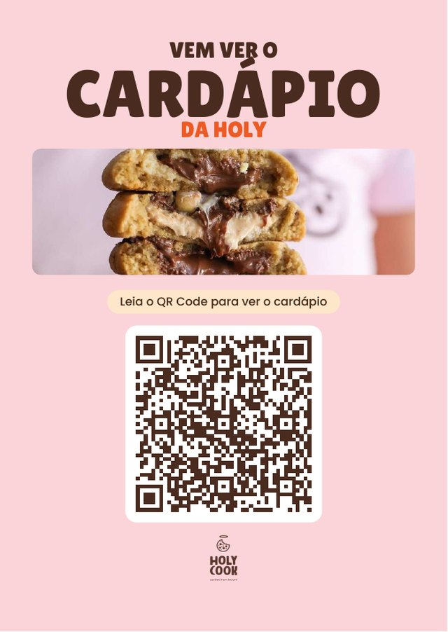

Dois cartazes com a mesma arte rosa dos outros: um leva ao cardápio da loja, o outro ao comparativo de preço com o iFood. Cada um sai em A6 avulso ou em folha A4 com quatro por página, para cortar na loja.

Porque o A6 é a quarta parte exata do A4. Duas colunas de 10,5 cm dão os 21 cm da largura e duas linhas de 14,8 cm dão 29,6 cm dos 29,7 cm da altura — sobra meio milímetro. Para caber seis, as peças teriam que ser menores que A6, e aí não seriam mais A6.
Na folha A4 as quatro peças vêm coladas umas nas outras, com uma linha tracejada em cima do corte. Imprima em tamanho real — se a impressora estiver em "ajustar à página", ela encolhe tudo e o corte sai torto.
Os quatro PDFs foram conferidos de volta: cada QR foi lido por um decodificador e devolveu exatamente o endereço esperado — inclusive os quatro da folha A4, um a um.
Para fazer o cartaz de outra loja, troque a URL em gerar-cartaz-cardapio.py e rode. A arte, a foto e o texto saem do mesmo arquivo.